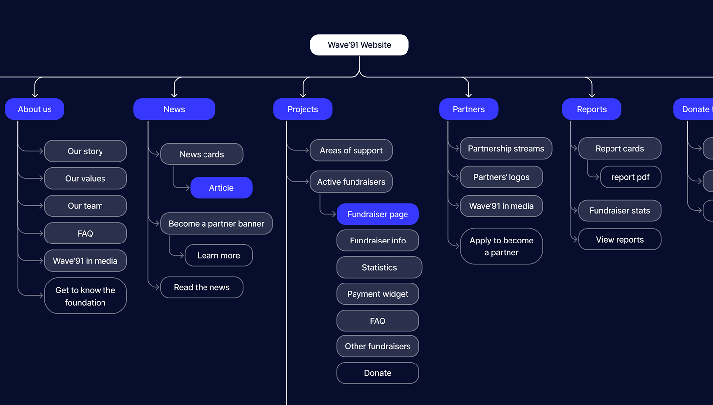

CHARITY FOUNDATION
SITE REDESIGN


Wave'91 is a Ukrainian charity foundation supporting the country's Defence Forces with cutting-edge military technologies. Since the beginning of the full-scale invasion, the foundation has grown into a highly adaptive, tech-oriented organisation working closely with frontline units to deliver real impact.
The goal of this project was to redesign the foundation's website to better reflect their mission, improve user experience, and support fundraising efforts through clearer communication and more effective UI.
BEFORE


Sensitive content
This photo contains sensitive content, such as poor layout and typography, which some people might find offensive or disturbing.
AFTER

Problem
The existing website had an unclear structure, outdated content, and poor usability.
Users found it difficult to navigate and understand the foundation's projects, which weakened trust and reduced engagement.
The website doesn't show all foundation's initiatives and fails to express it's new positioning as a military-focused charity.
Goals
Help increase donation flow & attract new donors — especially businesses and enterprise partners.
Reorganise the site structure for intuitive navigation and friction-free donation experience.
Using refreshed branding guidelines, design an engaging interface that shows the foundation's values and impact.
Visually convey that the foundation is effective and in direct contact with the military about real-time needs on the ground.

I initially mapped out IA and wireframes based on competitor analysis and client input. Having tested a prototype with both military and donor user groups, I later modified the architecture and content order to suit user needs better, like adding a separate page for the military and adding dedicated CTA banners for each user group.


Inspired by the folding logo geometry and bold, rough aesthetics of the military style, I arrived at the key stylistic decisions: chamfered corners, juxtaposed composition, large typography, and bold colours.


CARD DESIGN ITERATIONS
FINAL VERSION


BUTTON DESIGN


COLOUR PALETTE

[ TYPOGRAPHY ]
I used Onest for body copy. Designed for digital use, it remains legible and consistent at small sizes. It's clean, understated design intentionally contrasts with the bold, confident character of the Kharkiv typeface, creating a clear hierarchy and balanced typographic system.